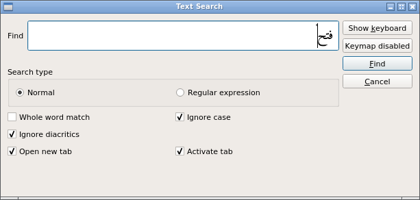
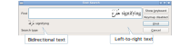
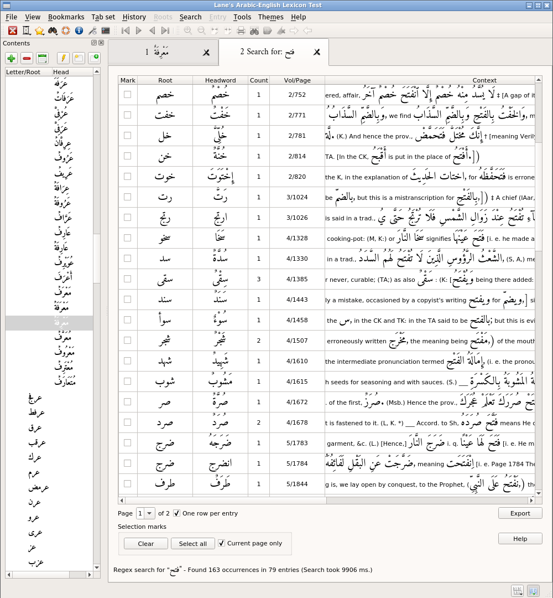
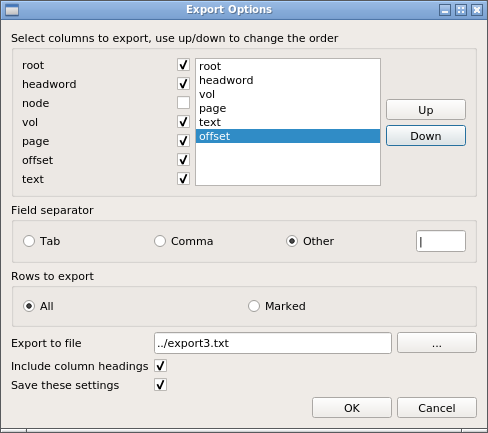
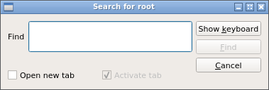
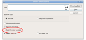
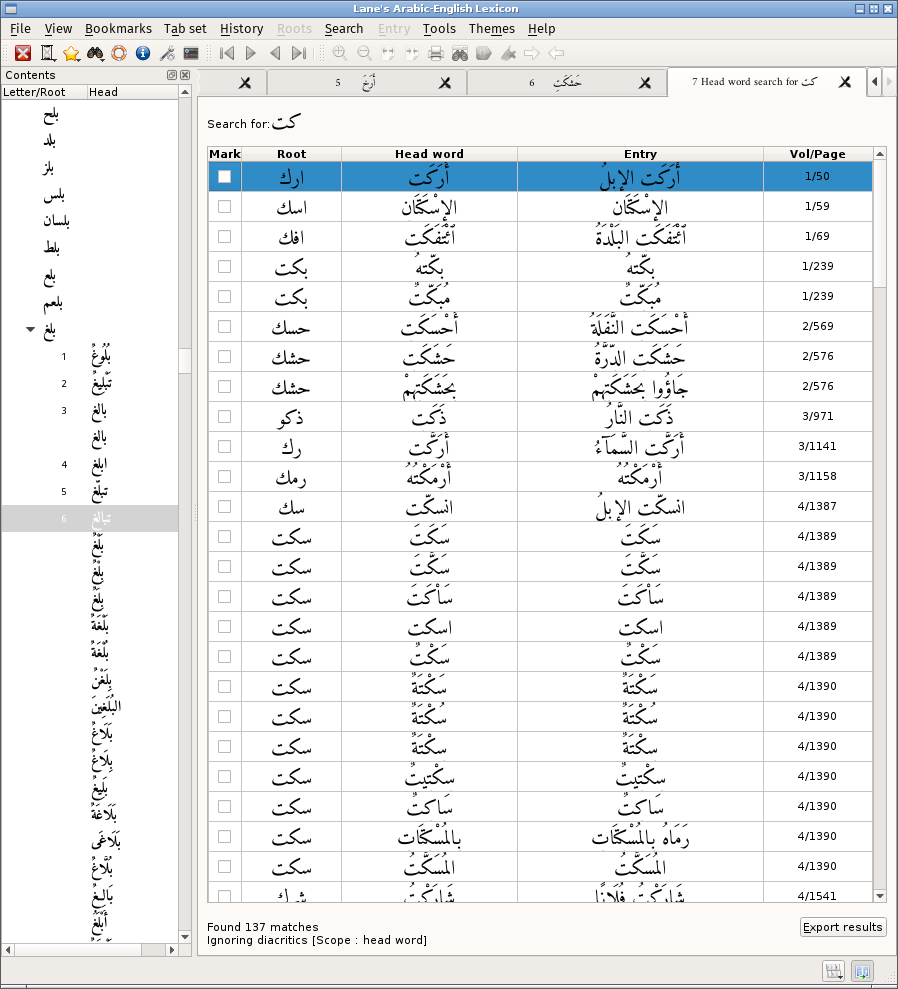
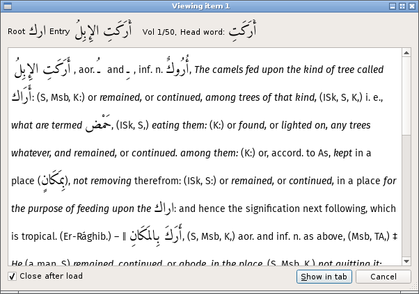
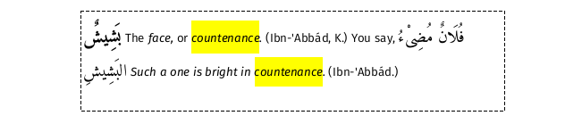

Overview
The Lexicon may be searched in its entirety for Arabic or non-Arabic text or a mixture of both. Additionally, when searching for Arabic text, the scope of the search can be restricted to either roots or headwords. These three search methods can be invoked either from the Search menu or by using the appropriate shortcut:
-
Ctrl+S,W Search for Arabic or non-Arabic text in the entire Lexicon
-
Ctrl+S,R Search for root
-
Ctrl+S,H Search for headword
Text search
The text search dialog can be used to enter both Arabic and non-Arabic text. Details on how to enter Arabic text are described here. (If keymaps are not used, the "Keymap disabled" button can be hidden by setting the appropriate options as described here.)

If the search pattern being entered contains both Arabic and non-Arabic text, the text will forced to display left-to-right. However, the visually correct text will be display immediately underneath, as shown here:

When searching the entire Lexicon for an Arabic word, the results are presented as shown below:

The results are presented in a table consisting of one or more pages. Use the page box to select which page to view. (The number of rows in a page is controlled via the search options.)
The results in the table will show
-
one row for every occurrence of the pattern, or
-
one row for each entry in which the pattern is found, with a count per entry shown
depending on the "One row per entry" checkbox. Changing this does not initiate a new search, but it will remove the any row selections that have been made.
The "Context" column shows the found text in context. To view the full entry either double-click the row or, with the row selected, hit the spacebar or return key. From the result dialog, shown below, it is possible to print or open the result as a new tab. Any number of these dialogs can be open at once.
To select/deselect which columns are shown, double-click on one of the column headers and make the appropriate selections in the dialog box that appears.
Saving the search results
Clicking the Export button in the bottom right of the search results dialog will show the export options. All or a selection of the results can be exported. Which fields are exported can be changed using the checkboxes and the order of those fields adjusted by selecting, with the mouse, a line in the list and changing its position by using the 'up' and 'down' buttons.

Search Options
There are two types of search:'normal' and 'regular expression' with slightly differing options.
Normal search
For a normal search the entered pattern is treated as literal text.
Ignore diacritics
When checked any diacritics will be ignored. What counts as a diacritic can be set here.
The default diacritics are: ً ٱ ٌ ٍ َ ُ ِ ّ ْ ٰ
Ignore case
When checked, the search will be case-insensitive (non-Arabic text only);
Whole word match
The match is successful only when the target is a whole word; patterns embedded within a word do not match. For example, when this option is set searching for كت will not match كتبن .
Regular Expression search
The pattern will be treated as a regular expression. The author of the software has found during testing that the embedded regular expression engine has some problems with Arabic. To the author's knowledge there are problems with word boundaries "\b" and Arabic text. There may be more.
Root
Searching for a root is the simplest (and fastest) search. Only exact matches are considered successful.

If found the root and all its children are loaded into either the current or a new tab, depending on the options selected.
Head word search
Head word search has an important option, highlighted below:

Search head phrase refers to the difference between an entry's headword and the full phrase that sometimes marks the entry in Lane's original text. (The distinction is discussed here.)
If this option is set, the search will be conducted using the head phrase as a target, otherwise the headword is used.
The results are returned in a table:

To view a particular search result either double-click the row or, with the row selected, hit the spacebar or return key. From the viewing dialog, below, it is possible to open the result as a new tab. Any number of these dialogs can be open at once.

(If the close after load checkbox is ticked, the view dialog will be closed after the entry has been loaded into a tab.)
Search the currently viewed entry
The currently viewed entry can be searched for Arabic or English text. Local searching can be done either via the context menu, the main menu or via the appropriate shortcut (default, Ctrl+L,F).
Found entries are highlighted in a user selectable color:

Highlighted text can un-highlighted from the main menu Entry -> Clear or by clicking on the Clear button on the toolbar.
The last search highlights (if they exist) can be re-instated using the shortcut Ctrl+L,S.
If the Highlight all option is set all the found items are highlighted. If not set, the first item is highlighted and subsequent entries are highlighted in turn using the shortcut Ctrl+L,N (show next).